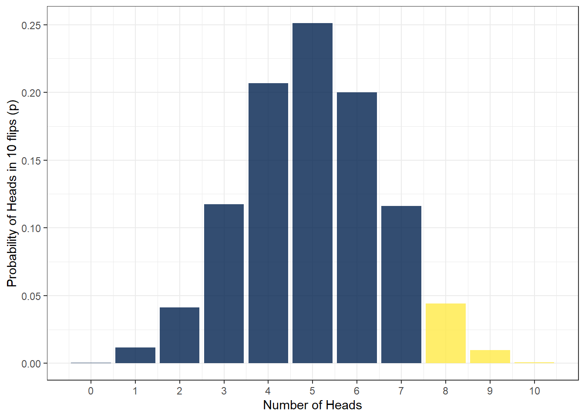
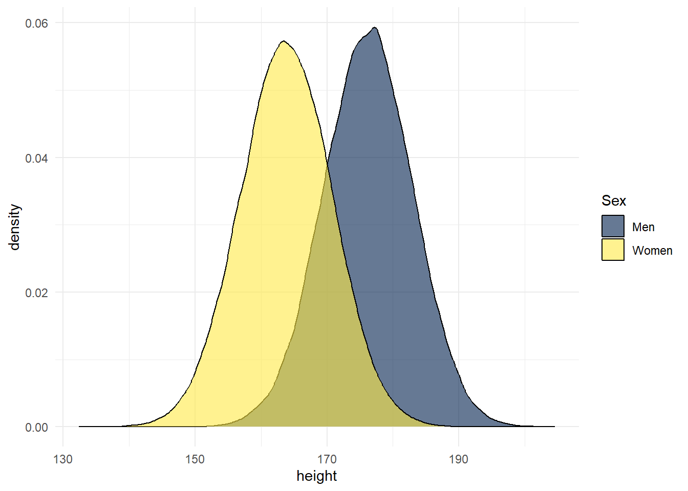

14 Probability continued
14.1 Walkthrough video
There is a walkthrough videohttps://gla-my.sharepoint.com/:v:/g/personal/matthew_checketts_glasgow_ac_uk/IQATzUYnZOI9SYcYHCNjnwx2ASCupgQhLt9_IUmsws2dJSk?e=TP5Zmp) of this chapter available via OneDrive.
First, we’re going to calculate probabilities based on the binomial distribution. In this chapter, for the first time we don’t need to load the tidyverse. All the functions we need are contained in Base R. If you want a refresher on the difference between Base R and packages, see Programming Basics.
14.2 Activity 1: Set-up
- Open a new R Markdown document, call it “Probability” and save it in your Data Skills folder.
We’re going to use three Base R functions to work with the binomial distribution:
dbinom() - the density function: gives you the probability of x successes given the number of trials and the probability of success on a single trial (e.g., what’s the probability of flipping 8/10 heads with a fair coin?).
pbinom() - the probability distribution function: gives you the cumulative probability of getting a number of successes below a certain cut-off point (e.g. probability of getting 0 to 5 heads out of 10 flips), given the size and the probability. This is known as the cumulative probability distribution function or the cumulative density function.
qbinom() - the quantile function: is the opposite of pbinom() in that it gives you the x axis value for a given probability p, plus given the size and prob, that is if the probability of flipping a head is .5, how many heads would you expect to get with 10 flips?
So let’s try these functions out to answer two questions:
- What is the probability of getting exactly 5 heads on 10 flips?
- What is the probability of getting at most 2 heads on 10 flips?
14.3 Activity 2: dbinom()
Let’s start with question 1, what is the probability of getting exactly 5 heads on 10 flips?
We want to predict the probability of getting 5 heads in 10 trials (coin flips) and the probability of success is 0.5 (it’ll either be heads or tails so you have a 50/50 chance which we write as 0.5). We will use dbinom() to work this out:
The dbinom() (density) function has three arguments:
x: the number of ‘heads’ we want to know the probability of. Either a single one, 3 or a series 0:10. In this case it’s 5.size: the number of trials (flips) we are simulating; in this case, 10 flips.prob: the probability of ‘heads’ on one trial. Here chance is 50-50 which as a probability we state as 0.5 or .5
Copy, paste and run the below code in a new code chunk:
- What is the probability of getting 5 heads out of 10 coin flips to 2 decimal places?
- What is this probability expressed in percent?
14.4 Activity 3: pbinom()
OK, question number 2. What is the probability of getting at most 2 heads on 10 flips?
This time we use pbinom() as we want to know the cumulative probability of getting a maximum of 2 heads from 10 coin flips. so we have set a cut-off point of 2 but we still have a probability of getting a heads of 0.5.
Note: pbinom() takes the arguments size and prob argument just like dbinom(). However, the first input argument is q rather than x. This is because in dbinom x is a fixed number, whereas q is all the possibilities up to a given number (e.g. 0, 1, 2).
Copy, paste and run the below code in a new code chunk:
- What is the probability of getting a maximum of 2 heads on 10 coin flips to 2 decimal places?
- What is this probability expressed in percent?
14.5 Activity 4: pbinom() 2
Let’s try one more scenario with a cut-off point to make sure you have understood this. What is the probability of getting 7 or more heads on 10 flips?
We can use the same function as in the previous example, however, there’s an extra argument if we want to get the correct answer. Let’s try running the code we used above but change q = 2 to q = 7.
This tells us that the probability is .95 or 95% - that doesn’t seem right does it? The default behaviour for pbinom() is to calculate cumulative probability for the lower tail of the curve, i.e., if you specify q = 2 it calculates the probability of all outcomes below 2. We specified q = 7 which means that it’s calculated the probability of getting an outcome of 0, 1, 2, 3, 4, 5, 6, and 7, the blue area in the below figure - which is obviously very high.

To get the right answer, we have to add lower.tail = FALSE as we are interested in the upper tail of the distribution. Because we want the cumulative probability to include 7, we set q = 6. This will now calculate the cumulative probability of getting 7, 8, 9, or 10 heads out of 10 coin flips.
Copy, paste and run the below code in a new code chunk:
- What is the probability of getting between 7 and 10 heads from 10 coin flips to 2 decimal places?
- What is this probability expressed in percent?
14.6 Activity 5: qbinom()
OK, now let’s consider a scenario in which you’d use the quantile function qbinom. Imagine that you’ve been accosted by a street magician and they want to bet you that they can predict whether the coin will land on heads or tails. You suspect that they’ve done something to the coin so that it’s not fair and that the probability of the coin landing on a head is no longer .5 or 50/50, it’s now more likely to land on tails. Your null hypothesis is that the coin is not dodgy and that the probability should be even (P(heads)=.5).You are going to run a single experiment to test your hypothesis, with 10 trials. What is the minimum number of heads that is acceptable if p really does equal .5?
You have used the argument prob in the previous two functions, dbinom and pbinom, and it represents the probability of success on a single trial (here it is the probability of ‘heads’ in one coin flip, .5). For qbinom, prob still represents the probability of success in one trial, whereas p represents the overall probability of success across all trials. When you run pbinom, it calculates the number of heads that would give that probability.
We know from looking at the binomial distribution above that sometimes even when the coin is fair, we won’t get exactly 5/10 heads. Instead, we want to set a cut-off and in this example we will use the default cut-off for statistical significance in psychology, .05, or 5%.
In other words, you ask it for the minimum number of successes (e.g. heads) to maintain an overall probability of .05, in 10 flips, when the probability of a success on any one flip is .5.
And it tells you the answer is 2. If the magician flipped fewer than two heads out of ten, you could conclude that there is a less than 5% probability that would happen if the coin was fair and you would reject the null hypothesis that the coin was unbiased against heads and tell the magician to do one.
qbinom also uses the lower.tail argument and it works in a similar fashion to pbinom.
However, ten trials is probably far too few if you want to accuse the magician of being a bit dodge. Run the below code and then answer the following questions:
- What would your cut-off be if you ran 100 trials?
- What would your cut-off be if you ran 1000 trials?
- What would your cut-off be if you ran 10,000 trials?
Notice that the more trials you run, the more precise the estimates become, that is, the closer they are to the probability of success on a single flip (.5). Again this is a simplification, but think about how this relates to sample size in research studies, the more participants you have, the more precise your estimate will be.
Visualise it!
Have a go at playing around with different numbers of coin flips and probabilities in our dbinom() and pbinom() app!
14.7 Normal distribution
A similar set of functions exist to help us work with other distributions, including the normal distribution and we’re going to use three of these:
dnorm()-the density function, for calculating the probability of a specific value
pnorm()-the probability or distribution function, for calculating the probability of getting at least or at most a specific value
qnorm()-the quantile function, for calculating the specific value associated with a given probability
As you can probably see, these functions are very similar to the functions we’ve already come across, that are used to work with the binomial distribution.
14.8 Probability of heights
Data from the Scottish Health Survey (2008) shows that:
- The average height of a 16-24 year old Scottish man is 176.2 centimetres, with a standard deviation of 6.748.
- The average height of a 16-24 year old Scottish woman is 163.8 cm, with a standard deviation of 6.931.
- There are currently no data on Scottish trans and non-binary people.
The below figure is a simulation of this data - you can see the code used to run this simulation by clicking the solution button.
men <- rnorm(n = 100000, mean = 176.2, sd = 6.748)
women <- rnorm(n = 100000, mean = 163.8, sd = 6.931)
heights <- tibble(men, women) %>%
pivot_longer(names_to = "sex", values_to = "height", men:women)
ggplot(heights, aes(x = height, fill = sex)) +
geom_density(alpha = .6) +
scale_fill_viridis_d(option = "E") +
theme_minimal()
In this chapter we will use this information to calculate the probability of observing at least or at most a specific height with pnorm(), and the heights that are associated with specific probabilities with qnorm().
14.9 Activity 6:pnorm()
pnorm() requires three arguments:
qis the value that you want to calculate the probability ofmeanis the mean of the datasdis the standard deviation of the datalower.tailworks as above and depends on whether you are interested in the upper or lower tail
Replace the NULLs in the above code to calculate the probability of meeting a 16-24 y.o. Scottish woman who is taller than the average 16-24 y.o. Scottish man.
- What is the probability of meeting a 16-24 y.o. Scottish woman who is taller than the average 16-24 y.o. Scottish man?
- What is this probability expressed in percent?
14.10 Activity 7: pnorm 2
Fiona is a very tall Scottish woman (181.12cm) in the 16-24 y.o. range who will only date men who are taller than her.
- Using
pnorm()again, what is the proportion of Scottish men Fiona would be willing to date to 2 decimal places?
- What is this probability expressed in percent?
14.11 Activity 8: pnorm 3
On the other hand, Fiona will only date women who are shorter than her.
- What is the proportion of Scottish women would Fiona be willing to date to 2 decimal places?
- What is this probability expressed in percent?
14.12 Activity 9: qnorm()
In the previous examples we calculated the probability of a particular outcome. Now we want to calculate what outcome would be associated with a particular probability and we can use qnorm() to do this.
qnorm() is very similar to pnorm() with one exception, rather than specifying q our known observation or quantile, instead we have to specify p, our known probability.
Replace the NULLs in the above code to calculate how tall a 16-24 y.o. Scottish man would have to be in order to be in the top 5% (i.e., p = .05) of the height distribution for Scottish men in his age group.
Visualise it!
Have a go at playing around with different distributions with these binomial and normal distribution apps.
And that’s it! The key concepts to take away from this chapter are that different types of data tend to follow known distributions, and that we can use these distributions to calculate the probability of particular outcomes. This is the foundation of many of the statistical tests that you will learn about in level 2. For example, if you want to compare whether the scores from two groups are different, that is, whether they come from different distributions, you can calculate the probability that the scores from group 2 would be in the same distribution as group 1. If this probability is less than 5% (p = .05), you might conclude that the scores were significantly different. That’s an oversimplification obviously, but if you can develop a good understanding of probability distributions it will stand you in good stead for level 2.